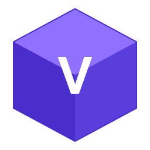

Verse
PC2
Minecraft Launcher
正在初始化...
v1.3.3
主页
下载
资源
模组
整合包
数据包
材质包
光影包
联机
陶瓦联机
红石联机
EnderLink联机
一起玩
工具箱
常用工具
社区
皮肤站
账户
设置
启动
个性化
其他
Java
实验
插件
云盘
功能暂不可用
根据相关法律法规，中国大陆地区暂不支持在启动器内下载游戏，以及使用任何联机，非常抱歉！
已安装的游戏版本仍可正常启动。
返回
正在验证登录状态...
启动失败
未知错误
导出日志
游戏启动失败，可前往
版本设置页面
使用
文件修复功能
解决此问题
修复
游戏日志
选择版本...

Player
启动游戏
0